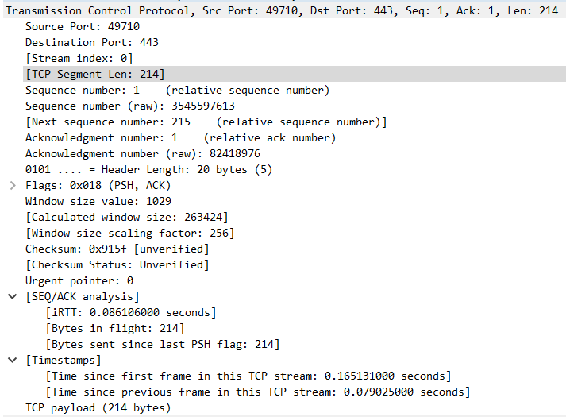
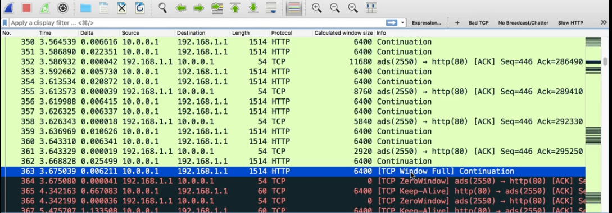
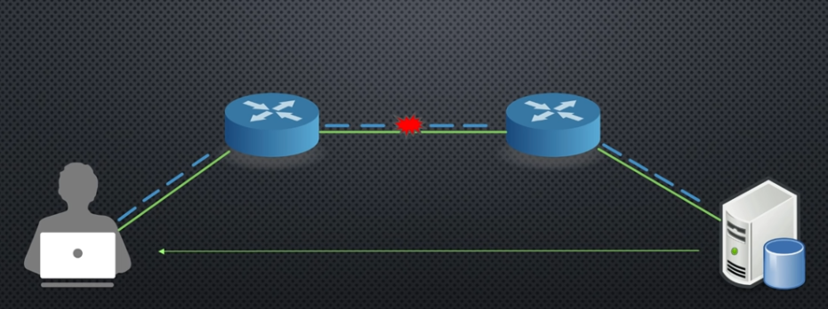
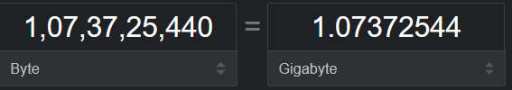
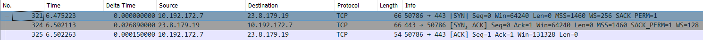

TCP Concepts & Packet Analysis
Overview: This guide explains how TCP behaves on the wire using Wireshark, including the handshake process, sequence/acknowledgement tracking, retransmissions, window scaling, and how to interpret DUPACKs and SACKs.
Part 1 – TCP vs UDP
- UDP is connectionless and lightweight, used for DNS, SNMP, etc.
- TCP is connection-oriented, uses state tracking, ACKs, congestion control, and teardown.
Part 2 – TCP 3-Way Handshake
SYN → SYN-ACK → ACK. Use the TCP conversation filter in Wireshark to isolate this. Relative sequence numbers simplify viewing. Look for Window Size, MSS, SACK Permitted, and Window Scale in SYN packets.
Part 3 – TCP Sequence Numbers
Each byte in TCP is tracked. Sequence number + segment length = next expected sequence number. Wireshark can display this using custom columns.
Part 4 – Duplicate ACKs
DUPACKs are triggered when out-of-order packets are received. If you see many DUPACKs, it can signal latency or packet loss. SACK Left/Right edge show what was received out-of-order.
Part 5 – Retransmissions
When no ACK is received, the sender retransmits after a timer expires. Observe Delta Time between packets to identify delay and retransmission threshold.
To Be Continued:
- TCP MSS vs MTU
- Finding TCP delays
- Slow file transfer analysis